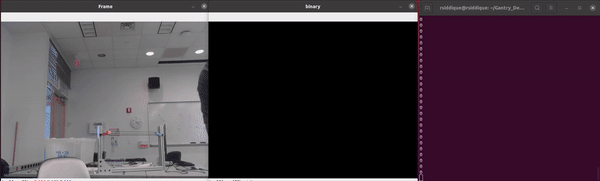
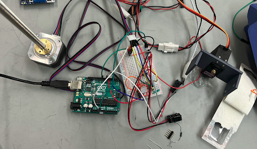

Timeline
Our project timeline was divided into 3 separate sprints.
Sprint 1
Mechanical
During this sprint we worked on creating a gantry system that moves along one axis and create an arm that is able to grab objects using a rack and pinion system. The gripper CAD is shown on the right.
Electrical
For the electrical system, we initially decided on using and ultrasonic sensor to detect how far away objects were from the gripper. Below is the circuit diagram for the ultrasonic sensor circuit, that relies on a series of filters and amplifications through operational amplifiers to output an accurate signal.

Software
For the software system, we began implementing a script that sends motor speeds to an arduino, while trying to follow a red object. Below shows the mask that filters out non red objects and the terminal is showing the motor speeds that were being set.

Sprint 1 Final Product
At the end of the sprint we achieved a one dimensional gantry system that is able to follow a red object as shown on the left.
The progress on this sprint help us establish a python controller that would be able to send inputs to a motor based on a camera input. Furthermore, it also began the process of creating the belt system that would eventually be an important foundation for future mechanical design.
Sprint 2
Electrical
In this sprint, we began to pivot towards a two Arduino control system and using the Adafruit Motorshields to power the stepper motors for the xy movement on the gantry. We also began exploring and using the A4988, specifically for a stepper motor that turns a lead screw. We also began using the IR Beam Break Sensors to integrate into the gripper. A picture of the electrical system during the sprint is shown below.
Mechanical
H-Bot Gantry

During this iteration, we began shifting towards an H-Bot gantry system that would allow robust xy movement with two stepper motors. Below is the progress made on the H-Bot gantry system
Gripper
In this sprint, we also began iterating the design of the gripper. We added slots for the IR Beam Break sensor. To the right is the gripper closing when it detects an object inside of the arms.

Software
For this sprint, we developed more code that enabled detection of different objects without using color. Specifically, we wanted to solve the game perfection, which is a shape matching game for children. As shown on the left, as a shape is rotated the python script tries to match it to one of the shapes inside the perfection game. Although we did not develop on this more in the future for the gantry movement, this code lays the foundation for placing and creating a gantry system that can play Perfection.
Sprint 3
Electrical
In this sprint, we simplified the entire system down to just 2 Arduino controllers to control the entire gantry by moving all the stepper motor control to A4988 drivers. This change also allowed us to move to higher torque stepper motors allowing for better gantry movement. We also worked on integrating the limit switches into the system.
Software and Firmware
A majority of the work in this sprint was done in firmware. We created the controller that controls all the movements of the gantry system and the gripper. We also added the states for when the limit switches are hit.
Mechanical
Gripper
In this sprint the gripper was slightly redesigned to allow for more stable gripper movement as show below.

H-Bot Gantry
A majority of our progress was made in fabricating the rest of the H-Bot system. We designed the frame of the gantry and and fabricated the H-Bot system that would go on top.
Sprint 3 Deliverable
Putting the controller and the gantry together gives us the movement that allows us to start organizing our desks.

From here we began working on our final system.
Click Here to learn about our final system